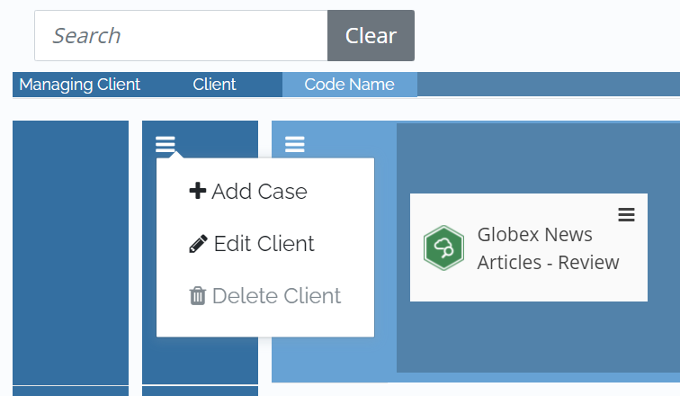
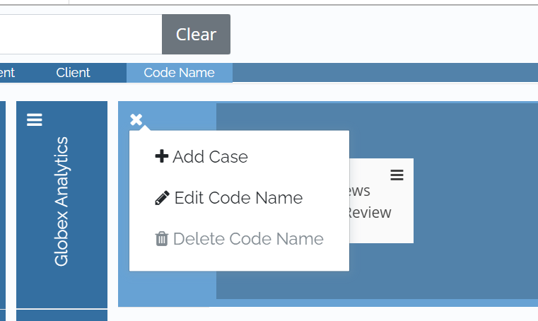

Note: To create an Early Data Assessment case in
A
|
|
Note: To create an Early Data Assessment case in |
In the
Complete the steps outlined below to create a new
|
|
Note
that in the |
Open the Case Management module.

Define the managing client and client. Take one of the following actions:
If the managing client and/or client do not exist, complete the steps listed in Create Managing Client and Client.
If the managing client and/or client exist, navigate to the relevant tile.
Determine whether an existing or a new code name is required for the new
To create a new code name for the new case, click the hamburger icon corresponding to the client. Select Add Case.

To create the new case for an existing code name, click the hamburger icon corresponding to the code name. Select Add Case.

On the Create Case page, select Early Data Assessment and click Create.

In the first section of Case Creation, you confirm the Code Name*, Matter Number, and Client. Review the details in the following table.
|
ITEM |
Description |
|
Code Name* |
Enter the new code name by using a maximum of 256 Unicode characters. For example, “Smith v. Jones.” |
|
Matter Number |
Optional: Enter a matter number by using a maximum of 128 Unicode characters. |
|
Client |
Review the selected client. If the wrong client was selected, click Cancel and start again with the correct client. |
Take one of the following actions:
If creating a new code name for the new case, define and enter the new code name in the Code Name* field.
If creating the new case for an existing code name, ensure that the code name generated in the Code Name* field is still correct. If not, click Cancel and create a new code.
Click Next.

In the second section of Case Creation, first define the name of the
Specify the relevant Connectors and Custodians*. Your selection determines which live data will be included in the case.
To include all available locations, click Select All Locations.
To include specific locations only, manually select the relevant connectors from the available list by selecting the corresponding checkboxes.
Select the appropriate Custodians*. Perform one of the following actions in the right panel of the Connectors and Custodians field:
To include all associated custodians, enable the Select All option.
To include specific custodians only, manually select the relevant custodians from the available list by selecting the corresponding checkboxes. To search for a custodian, type the custodian name in the Search Custodian Name search bar and press enter.
Review the selected Connectors and Custodians*. Make sure that you did not skip any pages.

| Note: Groups specify the users granted access permissions. For more information about how to create, make changes to, and manage users and groups, see |
Click Next.
In the third and final section of Case Creation, review the Summary of Case Settings. To make changes or corrections, click Back.

When satisfied, click Create Case. Wait as the case is created. When finished, the case displays in the Case Management page summary.
|
|
Note: To make changes to a |
Related Topics